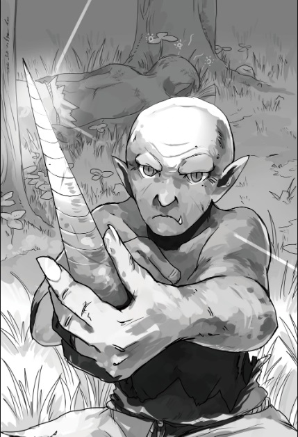

Today I went out hunting for the first time since reincarnating into a goblin. Those who do not work do not eat. The food specified for newborn goblins like me are chubby caterpillars for nourishment–no, I’m not saying that I don’t like them; they’re unexpectedly delicious, but we didn't have an unlimited supply of them. Hunting was unavoidable since rations were no longer available according to the children goblins' caretakers.
To be forced to hunt to eat from as early as the fourth day since birth, you can imagine how harsh life in the natural world is. As expected, it would be a little hard to go to hunt alone, so I made a buddy/sacrificial pawn, called Gobukichi-kun, by using some lies and flattery while we walked in the forest.
The goblins in this world seem to be idiots. Well, at least that made it easy to trick him.
Oh, that’s right. goblins naturally can breed with members of the same race. However, the conception rate seems to be relatively lower than what's needed in this dangerous environment. To overcome that, they kidnap women from other races and violate them until they’re pregnant.
You see, yesterday I went to the innermost parts of the cave secretly, it's a garbage storage called the « Treasure Warehouse », and while I was there a rusty sword fell down further in the back of the room. Although I couldn't take it out with me due to my current position in the community, when I went to examine it I stumbled across an adjacent room with several human women inside. They possessed some beauty, but they were almost naked and in a sorry state, all of them wore rags just a little better than the average goblin. In addition, there was a beautiful child in an even more severe state than the others.
From the fact that they didn't wipe the cloudy liquids covering their bodies, and their eyes which were exactly what you would call a dead fish's eyes, they most likely fell in despair and stopped moving long ago.
It was easy to guess that they had been kidnapped. Although I wanted to do something for them, I knew that it was impossible with my current strength, so the best I can do for them now is praying, I clasped my hands and recited “Namu”.
Perhaps one of them was my mother? But that’s too depressing to think about, so I’ll leave it alone for now…

Indeed, It was better for two to work together than to hunt alone, my first hunting since birth was successful thanks to my good coordination with Gubokichi-kun who followed my instructions, but it was regrettable that Gobukichi-kun tried to eat the prey by himself, so I hit him with a tree branch till he couldn't move to teach him about hierarchies. He eventually collapsed and began rolling around from pain, so I switched to dismantling the spoils.
The result of our first glorious hunt was a brown rabbit that had a 20 cm long horn growing out from its forehead, so I decided to call it a [ Horn Rabbit ]. The horn was sharp, and it may be small for a human to use but for me who is now a goblin it's just the perfect size. It didn’t cut like a blade, so piercing and thrusting it like an estoc would be a more suitable way to use it.
[ Goburou obtained 【 Animal Horn (small) 】!! ]
The moment I picked up the horn, an announcement resounded in my head, but it was probably just my imagination.
Oh,yeah. I forgot to tell you, but my current name is apparently Goburou. The goblin elder named me that when I opened my eyes for the first time.
Even though its not exactly to my tastes, I tolerated it since I don’t want to use my previous name.
Sometimes it is important to know when to give up.
At first, I tried using the Horn rabbit's horn to skin it, but it was too troublesome to peel the skin off of its body with the horn, and it was even more difficult to ignore the stares of the drooling Gobukichi-kun which made his face even more ugly than usual.
Wanting some peace, I decided to divide the Horn rabbit in half and gave one to him. I tried my best to peel the skin off of mine, but it grew too troublesome, so I ate the meat together with the skin.
I was able to procure a weapon and eat some fresh meat. This was a very fulfilling day. The meat was delicious.
The mysterious insects weren't bad, but they just couldn’t beat real meat.